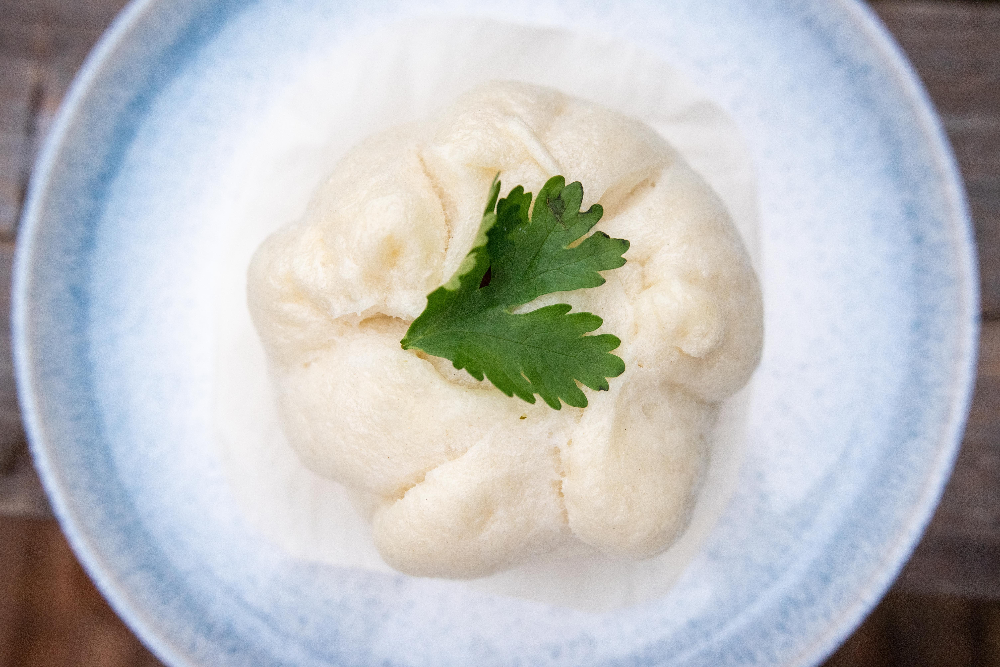

Mashed potatoes recipe

The aroma of mashed potatoes will always remind me of
dinner at grandma and grandpa's house!
ingredients
- 3 Yukon Gold potatoes, peeled and chopped
- ⅓ cup milk
- ¼ cup sour cream
- salt and ground black pepper to taste
Steps
- Place potatoes into a large pot and cover with salted water; bring to a boil.
Reduce heat to medium-low and simmer until tender, about 20 minutes. Drain.
- Mash potatoes with milk, sour cream, salt,
and pepper in the large pot.